Módulo para PrestaShop · versión 1.5.0
Amazon Marketplace Pro
Guía del usuario: qué hace el módulo, cómo funciona cada pantalla y cómo dejarlo trabajando sin supervisión.
Amazon Marketplace Pro conecta una tienda PrestaShop con Amazon a través de la Selling Partner API oficial de Amazon, para que puedas gestionar tu negocio en Amazon desde el back office que ya utilizas. Cubre todo el ciclo de venta:
El módulo funciona íntegramente dentro de tu instalación de PrestaShop y llama a Amazon directamente desde tu servidor. Los datos de productos, pedidos y compradores se guardan únicamente en tu propia base de datos.
IntelliPresta gestiona un pequeño servicio en intellipresta.com. Hace dos cosas y nada más:
| PrestaShop | 1.6 a 9. La interfaz se adapta a los diseños de back office de 1.6, de 1.7–9 y de «Basic Edition». |
| Cuenta de Amazon | Un plan de venta Profesional, activo, en cualquiera de los 23 marketplaces compatibles (Europa, Norteamérica, Brasil, Oriente Medio, África, Japón, Australia, Singapur, India). |
| Alojamiento | PHP con cURL. Se recomienda un crontab; si tu alojamiento no lo tiene, el programador de IntelliPresta lo suple. La función opcional de respuestas de los compradores necesita la extensión IMAP de PHP. |
| Catálogo | Cada producto y cada combinación necesitan una referencia (SKU) y un código de barras (EAN o UPC). La herramienta Comprobación del catálogo (sección 11.3) encuentra los que faltan. |
A partir de ahí, el orden de trabajo habitual es: revisar las referencias de tu catálogo (11.3), crear un perfil de anuncio para cada familia de productos (5.4), ejecutar la sincronización en dos pasos en Catálogo > Productos (5.1) y dejar que las tareas programadas lo mantengan todo al día.
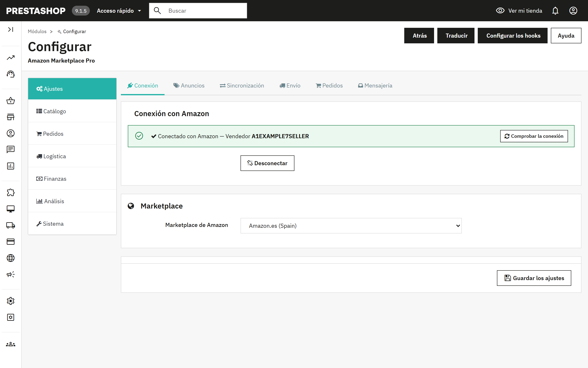
La página Configurar tiene una barra lateral con siete grupos. Cada grupo tiene pestañas en la parte superior, y cada pestaña contiene uno o varios paneles. El módulo recuerda en qué grupo estabas al recargar o guardar.
| Grupo | Pestañas | Para qué sirve |
|---|---|---|
| Ajustes | Conexión, Anuncios, Sincronización, Envío, Pedidos, Mensajería | Todo lo que se configura una sola vez. Un único botón Guardar los ajustes guarda las seis pestañas a la vez. |
| Catálogo | Productos, Perfiles, Márgenes y reglas, Reglas por producto, Cola, Huérfanos | Publicar los productos en Amazon y mantener los dos catálogos al día. |
| Pedidos | Pedidos, Pedidos pendientes, Devoluciones | Traer los pedidos de Amazon y gestionar la falta de existencias, las devoluciones y los mensajes de los compradores. |
| Logística | FBA, Multicuenta | Existencias gestionadas por Amazon, logística multicanal y marketplaces adicionales. |
| Finanzas | Reprecio, Comisiones, Promociones | Precios competitivos, comisiones de Amazon y promociones. |
| Análisis | Informes | Solicitar y descargar informes de Amazon. |
| Sistema | Automatización, Herramientas, Registros | La programación, las herramientas de catálogo, las eliminaciones, el contenido de los feeds y el registro de actividad. |
El grupo Ajustes es un único formulario. Cambia lo que quieras en cualquiera de sus seis pestañas y pulsa Guardar los ajustes al final.
Muestra si la tienda está conectada y con qué vendedor. Conectar con Amazon inicia el proceso de aprobación en Seller Central; Desconectar borra la autorización guardada. Elige el marketplace antes de conectar, ya que la página de consentimiento depende de él.
El aviso verde solo indica que hay una conexión guardada. Comprobar la conexión, dentro del aviso, demuestra que sigue funcionando: se conecta con Amazon, lee tus pedidos recientes y te dice con palabras claras que todo funciona o qué debes hacer. Úsalo después de conectar o cuando una sincronización informe de un error de autorización. La sección 13 enumera los resultados.
Marketplace de Amazon. El sitio de Amazon en el que vende esta tienda. Los marketplaces adicionales se añaden en Logística > Multicuenta (sección 8).
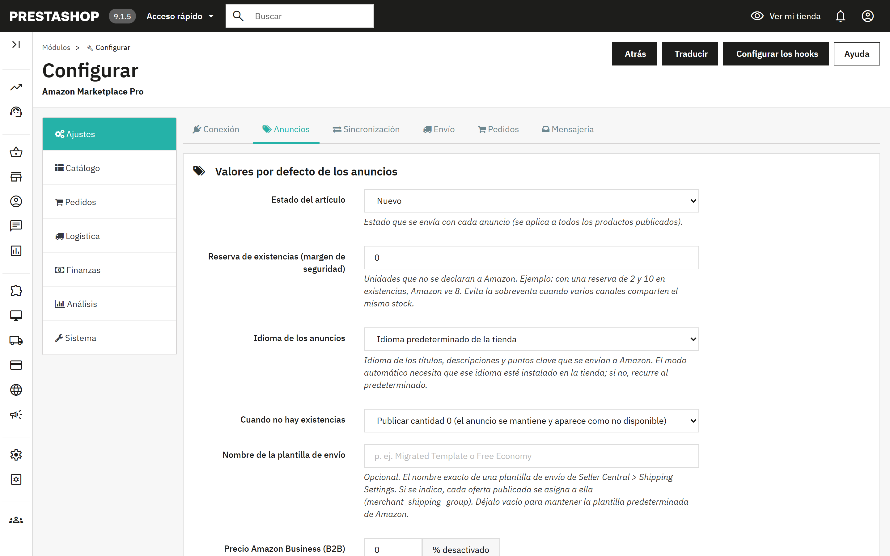
| Estado del artículo | Estado que se envía con cada anuncio: Nuevo, los cuatro grados de Usado o Reacondicionado. Un producto puede cambiarlo en su pestaña Amazon (sección 6). |
| Reserva de existencias | Unidades que no se declaran a Amazon. Con una reserva de 2 y 10 en existencias, Amazon ve 8. Evita la sobreventa cuando varios canales comparten las mismas existencias. |
| Idioma de los anuncios | Idioma de los títulos, las descripciones y los puntos clave. «Auto» sigue el marketplace (Alemania en alemán, Francia en francés) y necesita que ese idioma esté instalado en la tienda; si no, se usa el idioma predeterminado de la tienda. |
| Cuando no hay existencias | Publicar cantidad 0 (el anuncio se mantiene y aparece como no disponible) o eliminar el anuncio de Amazon. |
| Nombre de la plantilla de envío | Opcional. El nombre exacto de una plantilla de envío de Seller Central; todas las ofertas se asignan a ella. Los intervalos por precio o peso se definen en Envío (4.4). |
| Precio Amazon Business (B2B) | Porcentaje opcional de descuento sobre tu precio normal, que se envía como precio profesional para los compradores de Amazon Business. 0 lo desactiva. |
| Descuentos por cantidad B2B a partir del grupo | Un grupo de clientes de PrestaShop cuyos precios específicos con una cantidad mínima superior a 1 se convierten en tramos de volumen de Amazon Business, hasta un máximo de cinco. |
| Origen del SKU | Qué campo de PrestaShop se convierte en el SKU de Amazon: la referencia, el EAN o la referencia del proveedor. Los productos con ese campo vacío no se exportan. |
| Prefijo del SKU | Se añade delante del SKU con un guion: el prefijo AMZ da AMZ-REF123. |
| Intervalo de precios, Cantidad mín. | Exporta solo los productos cuyo precio final esté dentro del intervalo y cuyas existencias alcancen al menos el mínimo. 0 desactiva ese límite. |
| Usar precios específicos | Aplica los precios específicos de PrestaShop, opcionalmente los de un grupo de clientes, antes del margen. |
| Correo para informes | Las ejecuciones programadas envían aquí un breve informe. Vacío significa sin informes. |
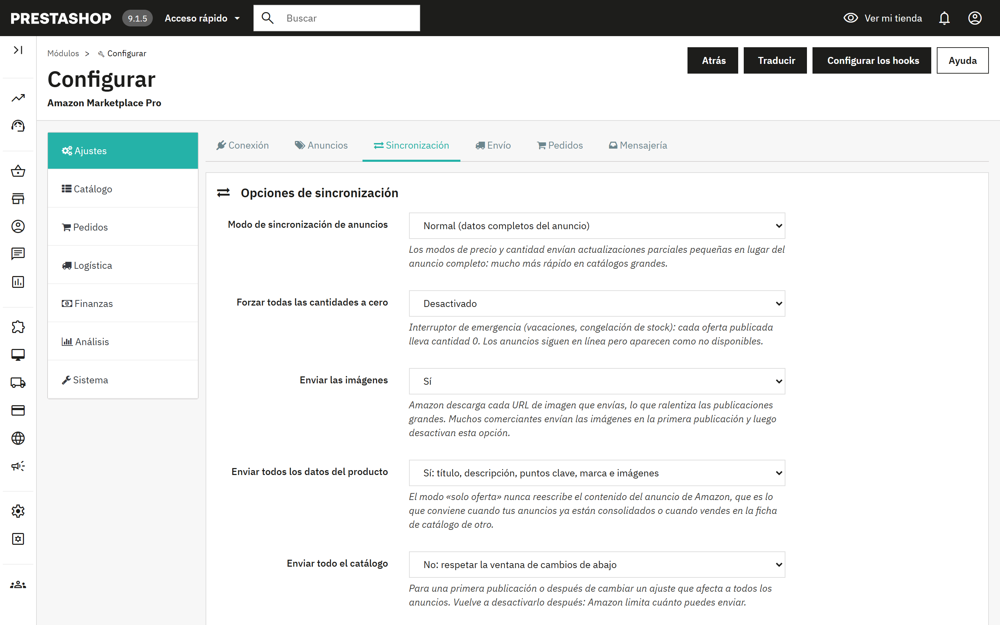
| Modo de sincronización de anuncios | Normal envía los datos completos del anuncio. «Solo el precio» y «Solo la cantidad» envían pequeñas actualizaciones parciales, mucho más rápidas en catálogos grandes. |
| Forzar todas las cantidades a cero | Interruptor de emergencia para vacaciones o una congelación de existencias. Los anuncios siguen en línea y aparecen como no disponibles. |
| Enviar las imágenes | Amazon descarga cada URL de imagen que envías, lo que ralentiza los envíos grandes. Muchos comerciantes envían las imágenes en la primera publicación y luego desactivan esta opción. |
| Enviar todos los datos del producto | Sí envía título, descripción, puntos clave, marca e imágenes. No envía solo la oferta (precio y existencias), lo que nunca reescribe el contenido del anuncio. Usa No cuando tus anuncios ya estén consolidados o cuando vendas en la ficha de catálogo de otro. |
| Enviar todo el catálogo | Ignora la ventana de cambios en una primera publicación o después de cambiar un ajuste que afecta a todos los anuncios. Vuelve a desactivarlo después. |
| Exportar solo los productos con ASIN | Limita los envíos a los productos ya asociados a una ficha de Amazon. |
| Limitar la exportación a N líneas | Limita cada lote de envío a entre 100 y 1500 líneas. |
| Tratar el campo EAN-13 como | Elige UPC si guardas códigos de barras estadounidenses de 12 dígitos en el campo EAN. |
| Exportar solo los productos modificados en las últimas | La ventana de cambios: de 1 a 24 horas. Muy recomendable en catálogos grandes. Los productos afectados por un cambio de reglas se incluyen a través de la Cola (5.6). |
| Eliminar las entradas de la cola después de | Tiempo de conservación de las entradas de la cola ya enviadas: 1, 7 o 15 días. |
| Redondeo de precios | Al céntimo más cercano, «inteligente» al alza hasta ,99, o números enteros. Se aplica después de los márgenes a todos los precios exportados. |
| Enviar los precios de oferta | Un precio específico con fecha de inicio y de fin se convierte en una oferta de Amazon con esa misma ventana, así que las promociones pueden enviarse por adelantado. |
| Enviar el precio de referencia | Envía el precio antes del descuento como precio de referencia tachado cuando es superior al precio exportado. |
| Reserva anticipada | Los productos con una fecha de disponibilidad futura se publican con esa fecha de reposición. |
| Correspondencia de estados | Hace corresponder los tres estados de PrestaShop con la lista más amplia de Amazon. |
| Formato del título de los anuncios | Nombre del producto tal cual, o «Marca - Nombre del producto - Atributos» según la recomendación de Amazon. La marca se omite cuando el nombre ya empieza por ella. |
| Notas de estado | Texto libre que se envía con los estados Usado y Reacondicionado. |
Tres interruptores hacen que el módulo reaccione a lo que ocurre en PrestaShop en lugar de esperar a la siguiente ejecución programada: enviar el precio y las existencias al guardar un producto, confirmar el envío con el seguimiento cuando un pedido pasa a Enviado, y cancelar en Amazon cuando un pedido de Amazon se cancela en PrestaShop.
Plantillas de envío por intervalo de precio o peso. Asigna distintas plantillas de envío de Seller Central según el precio o el peso del producto. Añade intervalos con un mínimo (incluido), un máximo (excluido, 0 para sin límite) y el nombre de la plantilla. Si está desactivado, o si ningún intervalo coincide, se usa la plantilla única de Valores por defecto de los anuncios.
Correspondencia de transportistas. Qué código de transportista de Amazon se comunica al confirmar los envíos de cada transportista de PrestaShop. Los transportistas sin correspondencia se detectan por su nombre.
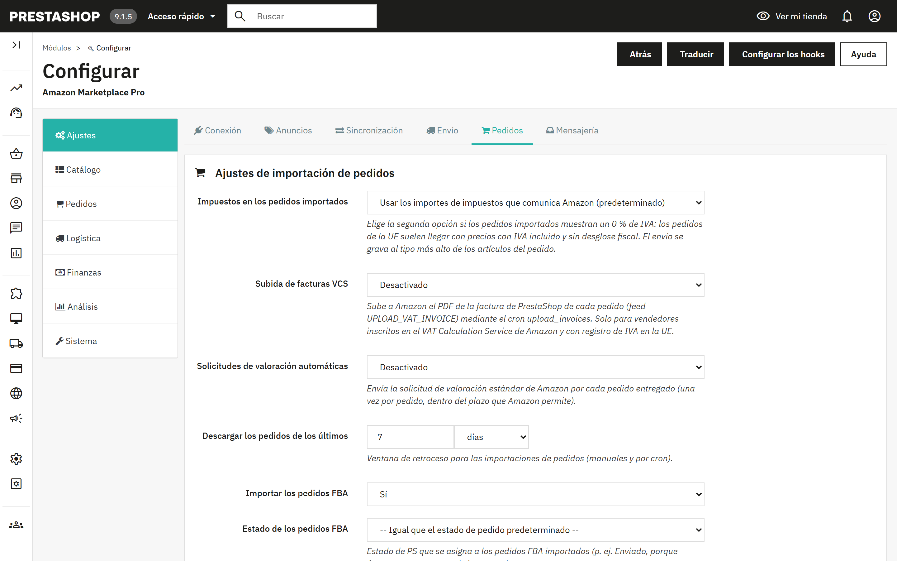
| Impuestos en los pedidos importados | Usa los importes de impuestos que comunica Amazon, o aplica tus reglas de impuestos de PrestaShop considerando los precios de Amazon con impuestos incluidos. Elige la segunda opción si los pedidos importados de la UE muestran un 0 % de IVA. |
| Subida de facturas VCS | Sube a Amazon el PDF de la factura de PrestaShop de cada pedido. Solo para vendedores inscritos en el VAT Calculation Service de Amazon. Se ejecuta con la tarea Subir facturas. |
| Solicitudes de valoración automáticas | Envía la solicitud de valoración estándar de Amazon una vez por pedido entregado, dentro del plazo que Amazon permite, mediante la tarea Solicitar valoraciones. |
| Descargar los pedidos de los últimos | Ventana de retroceso para las importaciones manuales y programadas, en días u horas. |
| Importar los pedidos FBA, Estado de los pedidos FBA, Estado de los pedidos enviados | Si se importan los pedidos gestionados por Amazon y qué estado de PrestaShop reciben estos y los pedidos ya enviados. |
| Emparejar las líneas de pedido por | La referencia o el SKU personalizado de cada producto (recomendado), o los ID de PrestaShop si tus SKU de Amazon se crearon a partir de los ID de producto y de combinación. |
| Dar prioridad al ASIN al emparejar | Empareja por ASIN antes que por SKU, usando la correspondencia que crean las sincronizaciones y Emparejar ASIN por EAN. |
| Usar un correo anonimizado para los clientes | Las direcciones de retransmisión de Amazon caducan; una dirección sintética evita que reboten los correos de la tienda. La mensajería con el comprador a través de Amazon sigue funcionando. |
| Eliminación de los datos del comprador, Eliminar los datos del comprador después de | Consulta la sección 12. |
| Grupo de clientes para los compradores de Amazon | El grupo que se asigna a los clientes creados por las importaciones. |
| Carrito remoto, Liberar una reserva después de | Reserva existencias para las compras de Amazon que aún no son pagaderas y las devuelve tras el periodo de gracia si el pedido nunca llega a ser pagadero. Consulta 7.3. |
| Pedidos sin existencias suficientes | Crear el pedido de PrestaShop de todos modos, o dejarlo en Pedidos pendientes para revisarlo. |
| Transportista predeterminado, Estado de pedido predeterminado | Se usan para los pedidos importados cuando no se aplica nada más específico. |
Amazon indica la velocidad de entrega que prometió al comprador; asocia cada velocidad a un transportista de PrestaShop. Las Reglas de estado avanzadas dan a determinados pedidos su propio estado, por ejemplo los pedidos Prime en un estado que el almacén no pueda pasar por alto, o los pedidos FBA directamente a Enviado. Las reglas se evalúan de arriba abajo y gana la primera coincidencia. Factura por correo envía el PDF de la factura de PrestaShop, junto con un adjunto opcional como tus condiciones, cuando un pedido alcanza el estado elegido.
Amazon no ofrece ninguna API para leer lo que responde un comprador; las respuestas llegan por correo a tu dirección de vendedor. Indica ese buzón al módulo (host IMAP, puerto, usuario, contraseña, carpeta, SSL) y archivará cada mensaje que cite un pedido de Amazon en el Servicio de atención al cliente de PrestaShop, junto al pedido correcto. Usa un buzón específico o una contraseña de aplicación con acceso solo de lectura. Recoger ahora las respuestas de los compradores lee los mensajes no leídos; la tarea Recoger mensajes de compradores lo hace a intervalos regulares.
La pestaña Productos es donde los productos pasan de un catálogo a otro. Las dos direcciones funcionan igual: primero una sincronización lee y compara, y muestra una tabla organizada por SKU; después, un segundo paso escribe. No se cambia nada hasta el segundo paso.
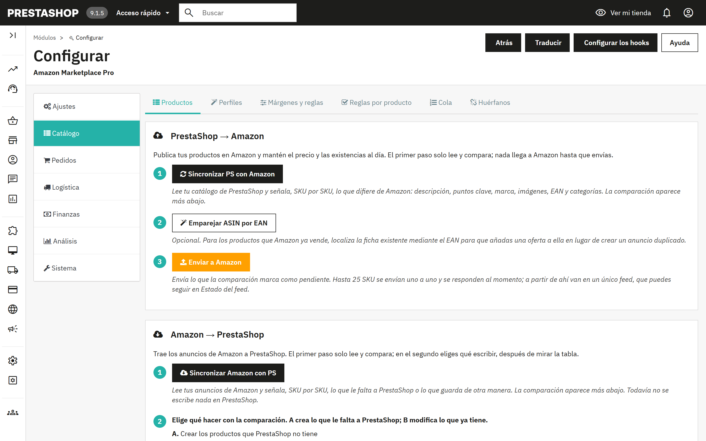
Estado del feed. Un envío de más de 25 SKU va en un único feed. Comprobar el estado del feed pregunta a Amazon si ha terminado y muestra el número de aceptados, errores y advertencias de cada feed. El JSON exacto de cada feed se guarda y puede descargarse en Sistema > Herramientas.
Correspondencia de categorías. La forma antigua y más sencilla de indicar a Amazon qué tipo de producto es: un tipo de producto de Amazon y un browse node opcional por cada categoría de PrestaShop, más atributos adicionales opcionales en JSON. Los productos de una categoría con correspondencia envían los datos completos del anuncio; los de una categoría sin correspondencia envían solo la oferta. Los perfiles de anuncio (5.4) hacen lo mismo con el propio formulario de atributos de Amazon y tienen prioridad; la correspondencia de categorías se mantiene como alternativa para las categorías sin perfil.
Lista de productos de Amazon. Una vista de solo lectura de lo que Amazon devuelve para tu cuenta.
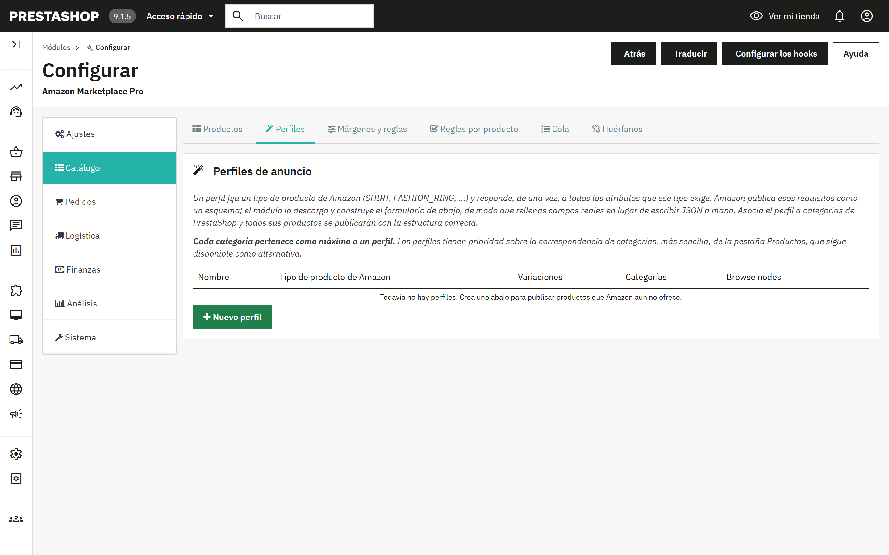
Un perfil fija un tipo de producto de Amazon (SHIRT, FASHION_RING, etc.) y responde, de una vez, a todos los atributos que ese tipo exige. Amazon publica esos requisitos como un esquema; el módulo lo descarga y construye un formulario, de modo que rellenas campos reales en lugar de escribir JSON. Asocia el perfil a categorías de PrestaShop y todos sus productos se publicarán con la estructura correcta. Cada categoría pertenece como máximo a un perfil.
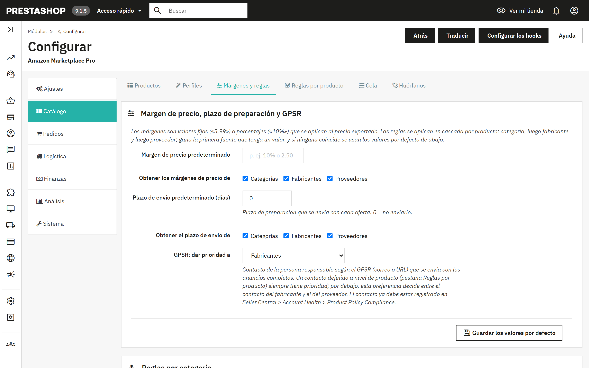
Los márgenes son valores fijos («5.99») o porcentajes («10%») que se aplican al precio exportado. Las reglas se aplican en cascada por producto: categoría, luego fabricante y luego proveedor; gana la primera fuente que tenga un valor, y si ninguna coincide se aplican los valores por defecto. La misma cascada fija el plazo de preparación y el contacto GPSR.
Las tablas Reglas por categoría, Reglas por fabricante y Reglas por proveedor contienen, para cada elemento, el margen de precio, el plazo de envío, el correo o enlace GPSR y un interruptor de Sincronización (sí/no). La tabla de fabricantes también contiene el país de origen. Al guardar, los productos afectados pasan a la cola para que la próxima sincronización diferencial vuelva a enviarlos.
Reglas por producto excluye productos concretos de la sincronización con Amazon o da a un producto su propio contacto GPSR, que tiene prioridad sobre los contactos del fabricante y del proveedor. Lo mismo, y más, está disponible en la pestaña Amazon de cada producto (sección 6).
Cola enumera los productos modificados en PrestaShop o afectados por un cambio de reglas. Con la ventana de cambios activada, las entradas activas se incluyen en la próxima sincronización aunque el producto en sí no se haya modificado hace poco. Las entradas enviadas pasan a inactivas y se purgan cuando termina el periodo de conservación configurado. El panel permite activar todo, desactivar todo, purgar las entradas caducadas y eliminar todo.
Huérfanos enumera los anuncios de Amazon que ya no corresponden a un producto vendible de PrestaShop, porque el producto se eliminó, se desactivó o cambió su SKU. Ejecuta primero Sincronizar Amazon con PS para que la lista refleje tu inventario real y después corrige los productos o elimina los anuncios con la herramienta de 11.3.
Cada ficha de producto de PrestaShop recibe una pestaña Amazon Marketplace Pro. Sus ajustes se aplican solo a ese producto y tienen prioridad sobre el perfil de anuncio, las reglas de categoría, fabricante y proveedor, y los ajustes globales. Deja un campo vacío para heredarlo.
| Sincronizar este producto con Amazon | Sí, o excluirlo de todas las exportaciones. |
| Enviar precio / enviar cantidad | Desmarca una de las dos casillas para dejar ese valor intacto en Amazon, por ejemplo cuando ajustas los precios en la propia Amazon. |
| Forzado de existencias | Enviar la cantidad real, siempre disponible (999) o siempre agotado (0). |
| Precio sustitutivo | Se envía en lugar del precio de la tienda; se omiten los márgenes y las reglas de precio. |
| SKU personalizado | Para un producto que ya existe en tu inventario de Amazon con otro SKU de vendedor. Sirve para actualizar el anuncio y para emparejar pedidos. |
| ASIN | Asocia la oferta a una ficha de Amazon conocida en lugar de dejar que Amazon la empareje por el código de barras. |
| Gestionado por Logística de Amazon | Si lo envías tú (MFN) o lo envía Amazon (AFN). |
| Plazo de preparación, Plantilla de envío, Browse node, Marca sustitutiva | Versiones por producto de los valores del perfil y de los globales. |
| Estado, Nota de estado | Sustituyen el valor global predeterminado, con la lista completa de estados de Amazon. |
| Características principales del producto | Un punto clave por línea, hasta cinco de 500 caracteres. Si se deja vacío, se generan a partir de la descripción corta. |
| Contacto GPSR | Correo o URL de la persona responsable; tiene prioridad sobre el contacto del fabricante y del proveedor. |
| Opciones de regalo, Código Transparency | Ofrecer envoltorio y mensaje de regalo; el código Transparency del producto si está inscrito. |
| Propagar estos ajustes a | Aplica los mismos valores, al guardar, a todos los productos de la misma categoría predeterminada, del mismo fabricante o del mismo proveedor, o a todos los productos activos. Los campos de identidad (SKU, ASIN, precio, código Transparency) nunca se propagan. |
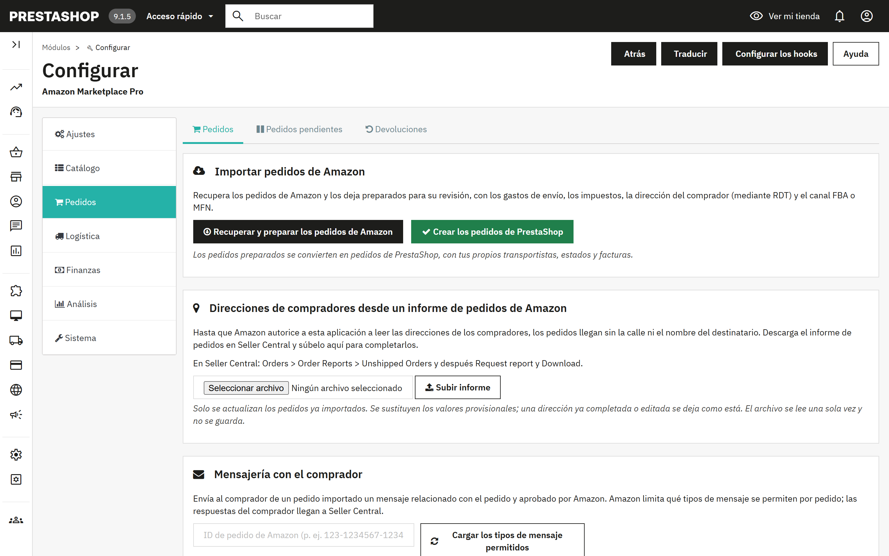
La importación tiene dos pasos, como el catálogo, para que puedas revisar antes de que se cree nada.
Las tareas programadas Importar pedidos y Crear pedidos de PrestaShop hacen estos mismos dos pasos sin intervención, cada 15 minutos por defecto. Cuando un pedido pasa a Enviado en PrestaShop, y el hook de 4.3 está activado, el módulo confirma el envío a Amazon con el número de seguimiento y el código de transportista asociado.
La lectura del nombre, la dirección y el teléfono del comprador directamente desde Amazon llegará pronto. Por ahora, la forma de obtenerlos es descargar el informe de pedidos de Seller Central y subirlo al módulo. Hasta que lo hagas, el pedido muestra el cliente como «Amazon Buyer» y la calle como «Amazon Marketplace Order».
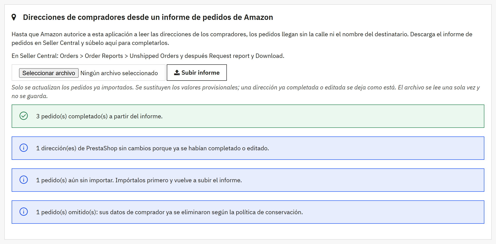
El resultado indica cuántos pedidos se han completado, cuántos ya tenían la dirección completa, cuántas direcciones de PrestaShop se han dejado sin cambios, cuántos pedidos aún no están importados y cuántos se han omitido porque sus datos de comprador ya se habían eliminado. La subida sigue estas reglas:
Volver a subir el mismo informe no causa ningún problema: todos los pedidos aparecerán entonces como ya completos. Los datos completados a partir de un informe se eliminan con el resto de los datos del comprador cuando termina el periodo de conservación (sección 12).
Pedidos pendientes contiene los pedidos de Amazon que no han podido convertirse en pedidos de PrestaShop porque a un producto le faltan existencias. Repón las existencias y vuelve a ejecutar Crear los pedidos de PrestaShop, fuerza el pedido con Crear de todos modos o elimínalo.
Existencias reservadas (carrito remoto) enumera las unidades retenidas para las compras de Amazon que aún no son pagaderas. Amazon presenta una compra en curso como un pedido «Pending»; con el carrito remoto activado (4.5), el módulo retira esas unidades del stock de PrestaShop de inmediato para que ningún otro canal pueda venderlas, las entrega cuando el pedido pasa a ser pagadero y las devuelve tras el periodo de gracia si no llega a serlo. La tarea Liquidar carritos remotos se encarga de liquidar estas reservas.
Importar devoluciones de Amazon recupera las devoluciones y cancelaciones; Procesar las devoluciones pendientes crea las facturas por abono de PrestaShop o cancela los pedidos de PrestaShop, según corresponda. La tabla Historial de devoluciones muestra cada una con su tipo, el importe reembolsado, el pedido de PrestaShop y la factura por abono. Las tareas Importar devoluciones y Procesar devoluciones automatizan ambos pasos.
Introduce un ID de pedido de Amazon y pulsa Cargar los tipos de mensaje permitidos; Amazon limita qué tipos de mensaje se permiten por pedido. Escribe el mensaje y envíalo, o pulsa Solicitar una valoración para enviar la solicitud de valoración estándar de Amazon, permitida una vez por pedido, entre 5 y 30 días después de la entrega. Las respuestas llegan por correo y pueden archivarse en el Servicio de atención al cliente con los ajustes de Mensajería (4.6).
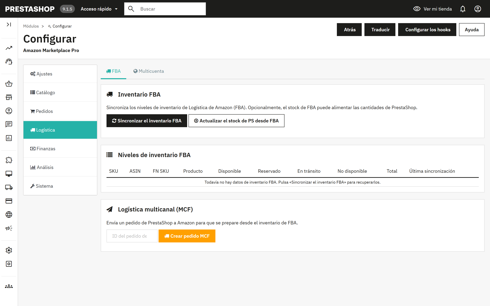
Sincronizar el inventario FBA descarga las existencias que Amazon guarda para ti, por SKU: disponibles, reservadas, en tránsito y no disponibles. Actualizar el stock de PS desde FBA escribe la cantidad disponible en PrestaShop, para los comerciantes cuyas existencias están en los almacenes de Amazon. La tarea Sincronización del inventario FBA ejecuta la descarga cada hora por defecto.
Introduce un ID de pedido de PrestaShop y pulsa Crear pedido MCF para que Amazon envíe un pedido de PrestaShop desde tu inventario de FBA.
Añade más marketplaces de Amazon, cada uno con su propio ID de vendedor o con el principal, y elige para cada marketplace si se sincronizan los pedidos, los productos y las existencias. Las tareas Importar pedidos, todos los marketplaces y Sincronización de productos, todos los marketplaces se encargan de ellos. El marketplace principal de Ajustes siempre está activo.
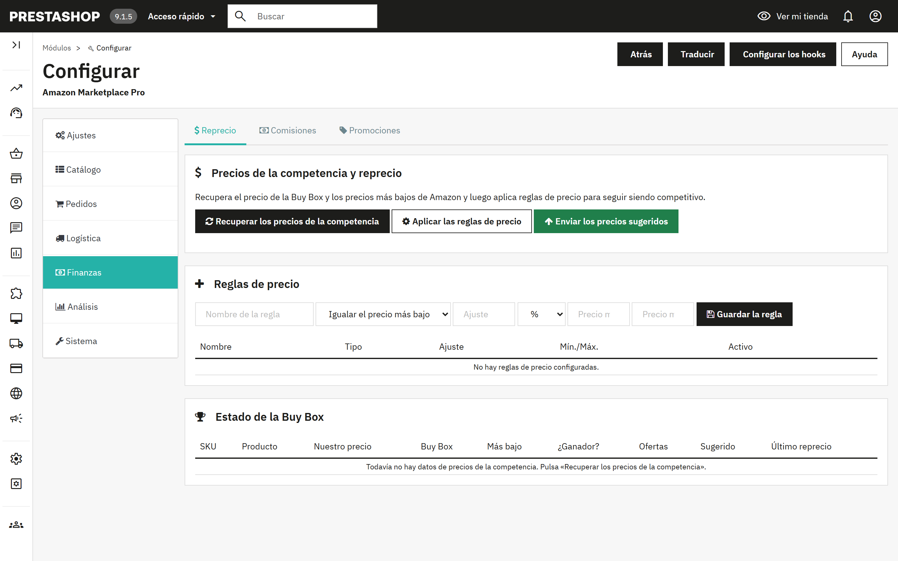
Tres botones, en este orden: Recuperar los precios de la competencia descarga el precio de la Buy Box, el precio más bajo y el número de ofertas de cada uno de tus anuncios; Aplicar las reglas de precio calcula un precio sugerido por SKU; Enviar los precios sugeridos envía los que apruebes. La tabla Estado de la Buy Box muestra tu precio frente al mercado y si tienes la Buy Box.
Una regla de precio tiene un tipo (igualar o bajar del precio más bajo, igualar o bajar de la Buy Box, o un margen fijo), un ajuste en porcentaje o en importe fijo, y un precio mínimo y otro máximo como límites de seguridad. La tarea Ciclo de reprecio recupera los precios y aplica las reglas a intervalos regulares; el envío sigue siendo manual salvo que lo actives allí.
Recuperar las tarifas de los pedidos trae desde la API Finances de Amazon las tarifas por referencia, las tarifas de FBA y las comisiones de cada pedido, para que veas el margen real de cada venta. El resumen las agrupa por tipo de tarifa. La tarea Recuperar tarifas se ejecuta cada seis horas por defecto.
Importa las promociones aplicadas a los pedidos de Amazon, exporta las reglas de carrito de PrestaShop para su seguimiento o crea reglas de carrito de PrestaShop a partir de las promociones de Amazon. La tabla del historial muestra cada promoción con su dirección.
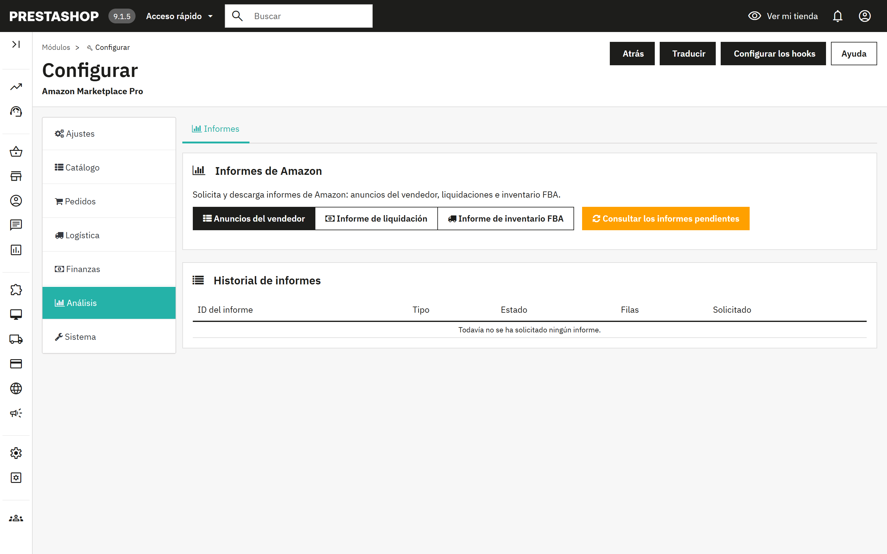
Solicita los informes de Amazon Anuncios del vendedor, Liquidación o Inventario FBA. Amazon prepara los informes en segundo plano; Consultar los informes pendientes comprueba cuáles han terminado y los descarga, y la tabla del historial muestra el estado y el número de filas. La tarea Consultar informes hace esa consulta cada 30 minutos por defecto.
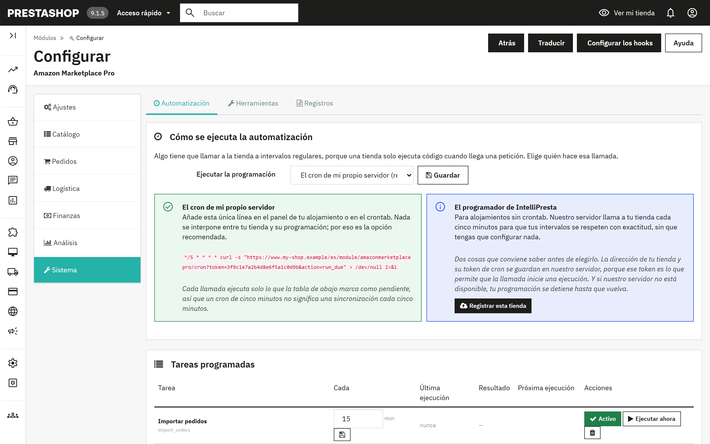
Una tienda solo ejecuta código cuando llega una petición, así que algo tiene que llamarla a intervalos regulares. Elige quién hace esa llamada:
| Modo | Cómo funciona | Elígelo cuando |
|---|---|---|
| El cron de mi propio servidor (predeterminado, recomendado) | Añade la línea que se muestra en el panel de control de tu alojamiento o en el crontab. Llama a tu tienda cada cinco minutos; cada llamada ejecuta solo las tareas pendientes. Nada se interpone entre tu tienda y su programación. | Tu alojamiento tiene crontab o una función de tareas programadas, como la mayoría. |
| El programador de IntelliPresta | Selecciónalo, guarda y pulsa Registrar esta tienda. El servidor de IntelliPresta llama a tu tienda cada cinco minutos, así que los intervalos se respetan con exactitud sin que tengas que configurar nada. La dirección de tu tienda y el token de cron se guardan en ese servidor; si no está disponible, tu programación se detiene hasta que vuelva. Dejar de usar el programador elimina el registro. | Tu alojamiento no tiene crontab o prefieres no mantener uno. La tienda debe ser accesible por HTTPS. |
La línea de cron tiene esta forma; el módulo muestra la tuya con la dirección y el token correctos:
*/5 * * * * curl -s "https://www.your-shop.example/module/amazonmarketplacepro/cron?token=YOUR-TOKEN&action=run_due" > /dev/null 2>&1
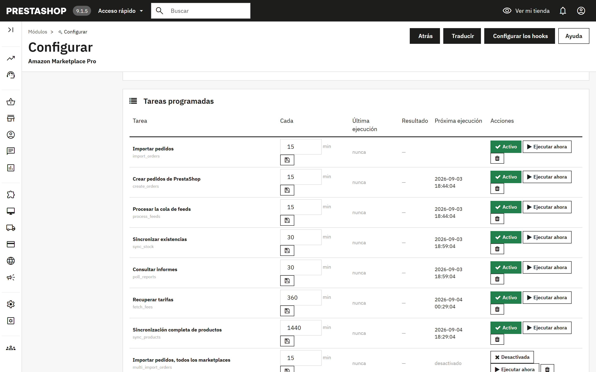
Cada fila es una tarea con su intervalo en minutos, cuándo se ejecutó por última vez y con qué resultado, y cuándo se ejecutará la próxima vez. Activo/Desactivada la activa o la desactiva, Ejecutar ahora la ejecuta de inmediato y la papelera la quita. Las tareas quitadas pueden volver a añadirse con el formulario de debajo de la tabla. En las instalaciones nuevas están todas las tareas, desactivadas, así que no se ejecuta nada hasta que tú lo decidas.
| Tarea | Por defecto | Qué hace |
|---|---|---|
| Importar pedidos | 15 min | Recupera y prepara los pedidos de Amazon de la ventana de retroceso (7.1, paso 1). |
| Crear pedidos de PrestaShop | 15 min | Convierte los pedidos preparados en pedidos de PrestaShop (7.1, paso 2). |
| Sincronizar existencias | 30 min | Envía las cantidades actuales, y los precios cuando el modo de sincronización los incluye, de los productos de la ventana de cambios. |
| Sincronización completa de productos | diaria | Lee el catálogo de PrestaShop, lo compara con Amazon y envía los anuncios pendientes (5.1, pasos 1 y 3). |
| Procesar la cola de feeds | 15 min | Envía como feeds los cambios de anuncios que están en cola y registra los resultados de Amazon. |
| Importar devoluciones / Procesar devoluciones | 60 min | Recuperan las devoluciones y cancelaciones, y después crean facturas por abono o cancelan pedidos (7.4). |
| Sincronización del inventario FBA | 60 min | Descarga los niveles de las existencias que guarda Amazon (sección 8). |
| Ciclo de reprecio | 60 min | Recupera los precios de la competencia y aplica tus reglas (sección 9). |
| Recuperar tarifas | 6 h | Registra las comisiones de Amazon por pedido. |
| Consultar informes | 30 min | Descarga los informes terminados (sección 10). |
| Sincronizar promociones | 6 h | Importa las promociones de los pedidos. |
| Importar pedidos / Sincronización de productos, todos los marketplaces | 15 min / diaria | Las versiones multimarketplace de la importación de pedidos y de la sincronización de productos. |
| Solicitar valoraciones | diaria | Envía solicitudes de valoración para los pedidos entregados, si están activadas en 4.5. |
| Liquidar carritos remotos | 15 min | Entrega o libera las existencias reservadas (7.3). |
| Recoger mensajes de compradores | 60 min | Lee las respuestas de los compradores en el buzón y las lleva al Servicio de atención al cliente (4.6). |
| Subir facturas | 6 h | Sube las facturas de IVA de los vendedores inscritos en VCS. |
| Purgar datos de compradores fuera del plazo de conservación | diaria | Elimina los datos personales del comprador de los pedidos más antiguos que el periodo de conservación (sección 12). |
Comprobación del catálogo. Amazon hace todas sus correspondencias con la referencia y el código de barras. Los productos a los que les falte alguno de los dos, o que compartan referencia con otro producto, no pueden publicarse ni asociarse a los pedidos entrantes. Comprobar mi catálogo los enumera.
Editor de referencias y códigos de barras. Exporta todos los productos y combinaciones en CSV, corrige las referencias y los códigos de barras en una hoja de cálculo y vuelve a subir el archivo. Solo se escriben la referencia, el EAN, el UPC y la referencia del proveedor. Esto modifica directamente tu catálogo de PrestaShop y no se puede deshacer; haz antes una copia de seguridad y hazlo antes de publicar, o crearás SKU duplicados en Amazon.
Eliminar anuncios de Amazon. Encuentra las ofertas de los productos que ya no vendes, ya estén eliminados, desactivados o excluidos de Amazon, y te permite revisar la lista antes de eliminar los seleccionados. La eliminación borra la oferta y su historial en Amazon, y no se puede deshacer. Para dejar de vender temporalmente, publica la cantidad 0 en su lugar (4.2).
Contenido de los feeds enviados. El JSON exacto que se envió a Amazon en cada feed, descargable por ID de feed. El soporte de Amazon te lo pedirá cuando un anuncio se rechace por un motivo que el informe no explique.
Las últimas 50 entradas del registro de actividad del módulo, con fecha, nivel, origen y mensaje. Los errores aparecen resaltados. Es el primer sitio que debes mirar cuando una tarea programada muestra «Error».
La política de protección de datos de Amazon obliga a eliminar los datos del comprador en un plazo de 30 días desde la entrega. Con Eliminación de los datos del comprador activada, que es la opción predeterminada, el módulo borra de su propia tabla de pedidos el nombre, el correo, la calle, la ciudad, la región, el código postal y el teléfono del comprador, además de la carga útil de Amazon almacenada, en cuanto un pedido está finalizado y es más antiguo que el periodo de conservación que hayas fijado. Los totales, los impuestos, las comisiones y el país de destino se conservan, así que los informes y los registros de IVA no se ven afectados. Los ajustes de Pedidos muestran cuántos pedidos están pendientes de borrado y ofrecen Borrarlos ahora; la tarea Purgar datos de compradores fuera del plazo de conservación lo hace a diario.
Desactivar la eliminación significa conservar los datos del comprador de Amazon más tiempo del que Amazon permite. Hazlo solo si tienes una obligación legal que puedas acreditar.
Anonimizar también el cliente y la dirección de PrestaShop está desactivado por defecto a propósito. PrestaShop compone las facturas a partir de la dirección guardada, así que anonimizarla altera documentos que la ley puede obligarte a conservar intactos, y una factura que debes conservar es justamente la excepción que permite la política de Amazon. Cuando está activado, un cliente se anonimiza únicamente si todos sus pedidos son pedidos de Amazon ya borrados, y la ciudad, el código postal y el país se conservan para que el tratamiento del IVA siga siendo justificable.
El Reglamento de seguridad general de los productos de la UE exige un contacto de persona responsable en los anuncios. Defínelo por producto (sección 6) o por fabricante o proveedor (5.5), y elige cuál de los dos tiene prioridad. El contacto ya debe estar registrado en Seller Central, en Account Health > Product Policy Compliance. El país de origen se define por fabricante.
Los pedidos importados pueden usar los importes de impuestos que comunica Amazon o tus propias reglas de impuestos (4.5). Los vendedores inscritos en el VAT Calculation Service de Amazon pueden subir automáticamente sus facturas de PrestaShop.
El resultado aparece bajo el aviso verde en Ajustes > Conexión. Cuando la comprobación falla, los detalles técnicos también se escriben en la pestaña Registros (11.4); el soporte te los pedirá.
| Resultado | Significado y qué hacer |
|---|---|
| «Todo funciona: el módulo puede acceder a tu cuenta de Amazon.» | La conexión funciona. Si una sincronización sigue fallando, el motivo está en la pestaña Registros. |
| «Amazon ha denegado el acceso a tu cuenta de vendedor.» | La conexión en sí está bien, pero Amazon no ofrece datos de este vendedor. Comprueba en Seller Central que la cuenta está activa y en el plan de venta Profesional. Si lo está, pulsa Desconectar y después otra vez Conectar con Amazon. |
| «Amazon ya no acepta esta conexión.» | La conexión se eliminó en Seller Central. Pulsa Desconectar y después otra vez Conectar con Amazon. |
| «No se ha podido contactar con Amazon ni con el servicio de conexión de IntelliPresta.» | Suele ser un problema de red pasajero. Inténtalo de nuevo en unos minutos; si sigue ocurriendo, contacta con soporte. |
| «Este servidor no puede abrir una conexión segura con Amazon.» | Los certificados de seguridad del servidor están desactualizados. Pide a tu proveedor de alojamiento que los actualice. |
| Síntoma | Causa y solución |
|---|---|
| «No se han encontrado productos con referencia (SKU)» después de Sincronizar PS con Amazon | Los productos no tienen referencia en el campo elegido como origen del SKU (4.2). Complétalos o usa el Editor de referencias y códigos de barras (11.3). |
| Envío aceptado, pero el anuncio en Amazon es solo de oferta | La categoría del producto no tiene perfil ni correspondencia de categoría, o «Enviar todos los datos del producto» está en No (4.3). |
| Anuncio rechazado con un error por falta de un atributo | Amazon decide los campos obligatorios de forma dinámica. Abre el perfil, busca el atributo en la lista opcional, rellénalo, guarda y vuelve a enviar. El contenido del feed (11.3) muestra exactamente lo que se envió. |
| Los pedidos importados muestran un 0 % de IVA | Elige «Aplicar mis reglas de impuestos de PrestaShop» en 4.5. |
| Una tarea programada muestra «Error» | La columna del mensaje y la pestaña Registros indican el motivo. Pulsa Ejecutar ahora para reintentarlo después de corregirlo. Si falla repetidamente, pulsa Comprobar la conexión (4.1). |
| No se ejecuta nada aunque las tareas están activadas | Ningún cron está llamando a la tienda. Comprueba que la línea de cron existe en el panel de tu alojamiento, o que la tienda está registrada en el programador de IntelliPresta y es accesible por HTTPS. |
| Correos rebotados a compradores de Amazon | Las direcciones de retransmisión de Amazon caducan. Activa el correo anonimizado (4.5). |
Escribe a support@intellipresta.com. Incluye la versión del módulo, la versión de PrestaShop, las líneas relevantes de la pestaña Registros y, en problemas con anuncios, el ID del feed o el SKU. Respondemos en un plazo de un día laborable.
| SKU | Tu propio identificador de un producto en Amazon. El módulo lo crea a partir de un campo de PrestaShop, normalmente la referencia. |
| ASIN | El identificador de Amazon para una ficha de catálogo. Varios vendedores pueden ofrecer el mismo ASIN. |
| EAN / UPC / GTIN | Códigos de barras de los productos. Amazon los usa para asociar tu producto a una ficha existente. |
| Anuncio frente a oferta | Un anuncio es la ficha de catálogo con título, descripción e imágenes. Una oferta es tu precio y tus existencias en esa ficha. |
| Tipo de producto | El esquema de categoría de Amazon (SHIRT, FASHION_RING) que determina qué atributos debe llevar un anuncio. |
| Perfil | Las respuestas guardadas del módulo para un tipo de producto, asociadas a categorías de PrestaShop. |
| Feed | Un documento por lotes que se envía a Amazon y se procesa en segundo plano. Se usa para envíos de más de 25 SKU. |
| MFN / AFN / FBA | Merchant Fulfilled Network: envías tú. Amazon Fulfilled Network, también llamado Fulfillment by Amazon (Logística de Amazon): Amazon envía desde sus almacenes. |
| MCF | Multi-Channel Fulfilment (logística multicanal): Amazon envía un pedido de otro canal, como tu propia tienda, desde tus existencias de FBA. |
| Buy Box | La oferta predeterminada que se muestra en la ficha de un producto de Amazon. El reprecio intenta ganarla o conservarla. |
| RDT | Restricted Data Token: el mecanismo mediante el cual Amazon entrega a la tienda las direcciones de los compradores, de llamada en llamada. |
| GPSR | El Reglamento de seguridad general de los productos de la UE, que exige un contacto de persona responsable en los anuncios. |
| VCS | El VAT Calculation Service de Amazon, cuyos vendedores inscritos suben sus propias facturas de IVA. |
| Ventana de cambios | El periodo dentro del cual un producto debe haber cambiado para incluirse en un envío. |
| Carrito remoto | Una compra de Amazon en curso, presentada como un pedido Pending, cuyas existencias el módulo puede reservar. |
Amazon Marketplace Pro lo desarrolla y mantiene IntelliPresta, y no está respaldado por Amazon ni por PrestaShop ni afiliado a ellos. Amazon es una marca comercial de Amazon.com, Inc. o de sus filiales. PrestaShop es una marca comercial de PrestaShop SA.